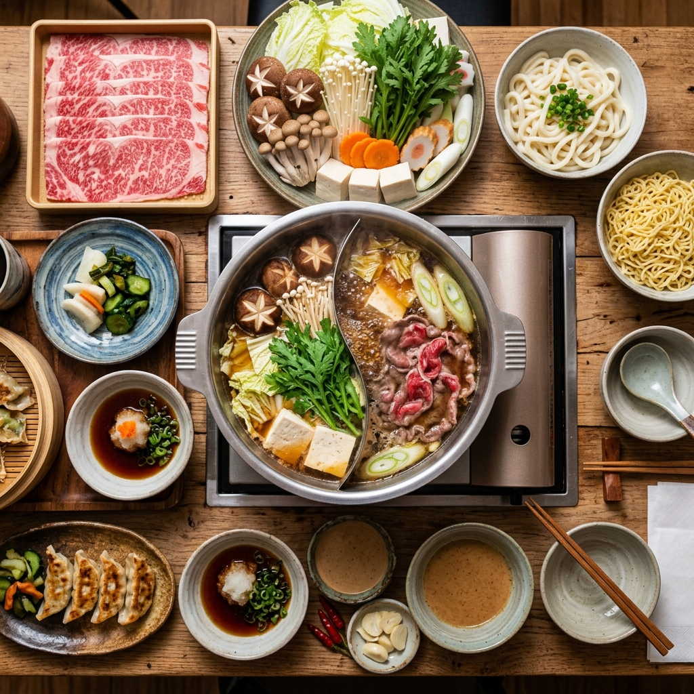
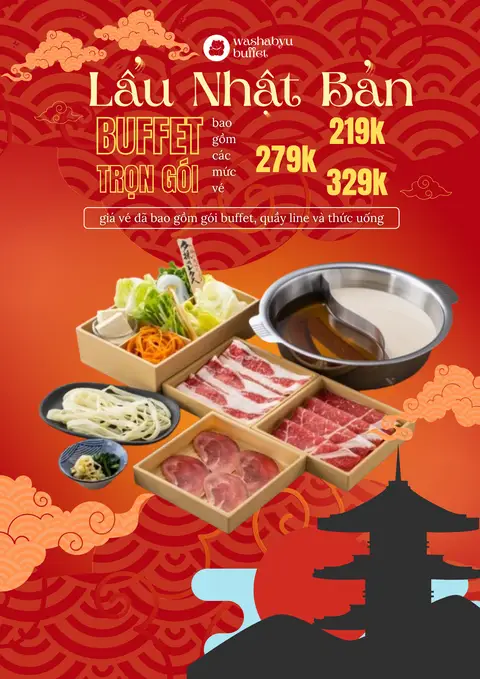
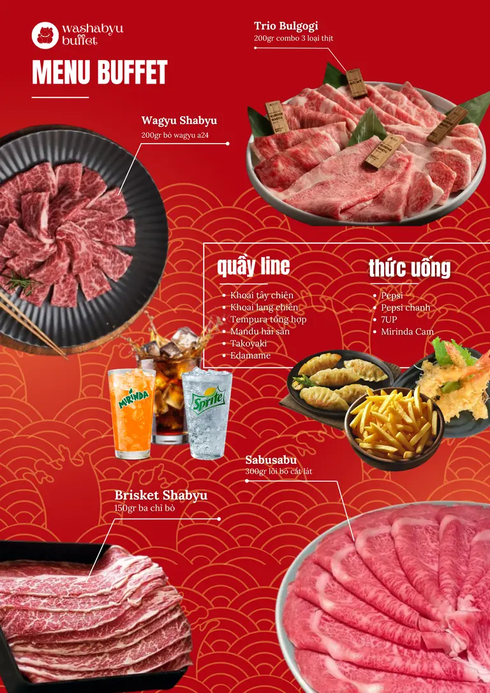

Sample Size
410Hanoi residentsCompleted choice tasks
Back to all research
Behavioral research project
Buffet Menu Nudging and Choice Architecture
This study tests whether re-ordering menu information can reduce intended plate-waste risk while preserving value perceptions and commercial appeal in buffet and hotpot restaurants.
Context: Hotpot Buffet
Discrete Choice Experiment
Hanoi, Vietnam



Primary Effect
-146 kcalHOF vs UOFIntended calorie reductionBusiness Signal
0.52Higher-tier choice odds ratioPremium selection decreasesStudy Setup
2 Studies2 x 2 menu order conditionsHOF vs UOF across contextsThe problem
Background and Gap
Buffet formats are inherently vulnerable to over-serving because fixed pricing reduces marginal cost at the point of diner choice.
Food-service contributes to a meaningful share of consumer-level waste, and buffet formats are exposed due to visual abundance and value-seeking behavior that can push guests toward higher-calorie and higher-volume selections.
This research addresses a practical managerial gap: can a low-cost, non-restrictive menu-order intervention reduce plate-waste risk while preserving perceived value and premium-tier demand?
How we tested it
Method and Experimental Design
We used stated-preference discrete choice experiments under random utility theory, with menu order as the key manipulation.
Study 1
Context: Korean buffet and hotpot
Sample: 257 respondents
HOF
Vegetarian + Light + Premium + Indulgent

VS
UOF
Indulgent + Premium + Light + Vegetarian

Focus: Effect of menu order on calorie intake, perceived value, and tier choice.
Study 2
Context: Tiered-price choice
Sample: 147 respondents
HOF219K279K329K
VS
UOF329K279K219K
Focus: Effect of price-tier order on premium selection and value perception.
Same menu items and descriptions
Same pricing and portions
Same visuals and layout
Same restaurant brand story
Simulation menus used in the experiment
Example menu screens shown to participants during the choice tasks
Condition-neutral
Healthy-options-first
Unhealthy-options-first

Low to high

High to low
Consistent visual style
Realistic menu items
Mobile and desktop screens
Context-rich photography
Intended Calorie Intake
Significant reduction with HOF across both studies.
Higher-Tier Package Choice (Study 2)
HOF significantly reduced odds of choosing a higher-priced tier.
0.52p < 0.05Odds Ratio (HOF vs UOF)
- Premium choice fell from 52.4% to 23.8%
- Perceived value declined in hotpot context
- Adoption needs premium value reassurance
Takeaway
Small design changes. Real impact.
Re-ordering menu information is a simple nudge that can reduce over-serving risk, but buffet operators must preserve premium cues so the healthier sequence does not weaken value perception or tier upgrades.
Back to summary